Project Overview
Summary
EMX Systems is a healthcare technology company based in Michigan developing a health information exchange platform to improve medical record exchange between healthcare providers who use different electronic medical records (EMR) systems. The most popular EMR solutions, which store electronic patient records, cannot communicate to access each others records. Our client is developing software that supplements a provider’s existing EMR to make record exchange possible. Their platform includes an intranet web application, EMX Portal, for providers to securely access patient records from any other provider regardless of the originating EMR.
As part of UMSI Design Clinic, I, along with four other designers, were tasked with designing EMX Systems to fit healthcare providers’ workflows. We applied a user-centered design process to understand the needs of medical professionals and used a parallel prototyping process that involved our entire team at every step. A interactive prototype ready for development was delivered to the client with detailed UI specifications.
My role
I contributed during each step of our research and design process. I interviewed two physicians, contributed to interview analysis, wrote content for the personas, and developed our user journey. During the prototyping phase, I was responsible for designing the dashboard and the individual record screen. I also lead the development of a UI component library in Sketch to improve our team’s prototyping speed.
The Challenge
Our client, an retired medical doctor, believes that current electronic medical record (EMR) solutions, which store digital patient records, are not designed for healthcare providers’ needs. Many doctors have at least one complaint about their EMR. Solutions are often are selected based on the needs of the hospital administration, such as the ability to bill patients more efficiently.
Our client believes that a more provider-friendly system can be created. His new company, EMX Systems, aims to supplement existing EMRs by providing fast, secure patient data access at the point of care. Fundamentally, he challenged our team to solve the following problem for the EMX portal application:
How can a healthcare record system be designed to better fit care providers’ needs?
Our Approach
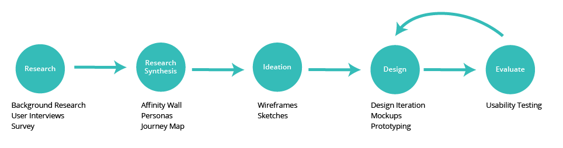
We used a user-centered design approach where users were involved at every step of the process. We conducted user research to identify problems, ideated to come up with multiple solutions, created a prototype based on our best idea, and validated our idea using usability tests. Based on test results, we iterated on our prototype. For this project, we completed four design iteration cycles.
Design Overview
 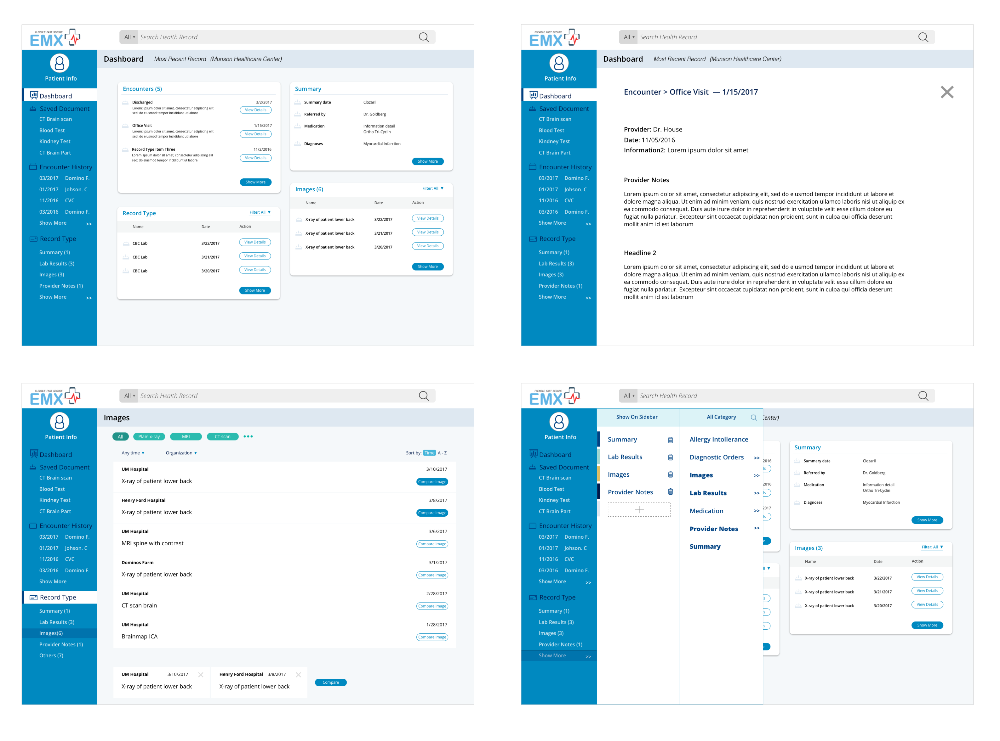
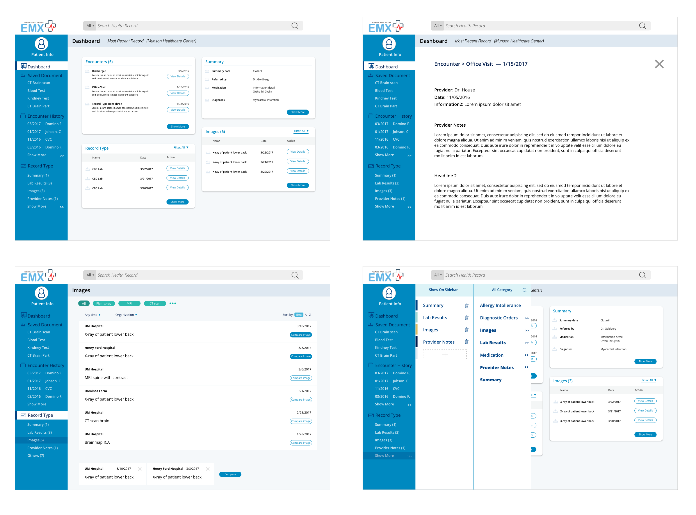
User Research
Contextual Inquiry
In order to understand how healthcare providers used patient records, we conducted 9 interviews with care providers. Our interviewees group included a combination of doctors, nurses, and medical students.
We used a contextual inquiry approach to interviews, in which we visited interviewees at their office to ask questions about their EMR usage experiences, followed by observing them interacting with their EMR*. Each member of the our group was responsible for conducting 1-2 interviews. Afterwards, we synthesized our interview data by building an affinity diagram to organize our notes and synthesize our findings.
*Interviewees demonstrated with their own medical data or used data from patients who signed HIPAA waivers for this project.
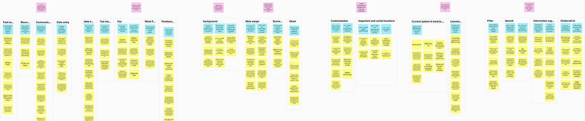
Based on our affinity diagram, we learned the following for our interviews:
- Quality of outside records is inconsistent: Records sent from other providers are often scanned in the system as images and therefore unsearchable, with varying levels of image quality.
- Too much complexity:Learning a new EMR system takes too long, and providers feel unproductive searching for information. One interviewee noted that he need to take a multi-day workshop to learn a new EMR system when it was first implemented.
- Double work: If a lab or imaging result can’t be found in the current system, a provider may reorder the test becuase it is faster than waiting for the previous result to arrive.
- Too much noise: Interviewees disliked that their system shows too much information unrelated to their patient.
- Interface doesn’t fit workflow: Interviewees frequently needed to make dozens of clicks to reach certain types of records.
Survey
After our team gather in-depth stories of provider’s EMR experiences via interviews, we wanted to learn more about what types of patient information were most important. Our team designed a survey on EMR usage which was taken by 20 medical professionals in the University of Michigan hospital system.
Based on our survey, we learned that:
Viewing the result of imaging studies (1), imaging reports (2), and lab reports (3) were ranked as top three most common reasons for a practitioner to view a patient record.
75% of respondents viewed the ability to see outside records at the point of care as very important.
Providers were generally dissatisfied (60%) with asking patients to bring in their own records before an encounter.
Personas + User Journey
Based on our interviews, our team constructed three personas representing distinct groups in our audience. During our prototyping phase, they were valuable in reminding our team of the distant ways different types of providers used EMRs.
Erin, Senior Doctor: Erin is a seasoned doctor who has practiced medicine for over 20 years and saw the transition from paper-based to electronic record systems. She is not a tech-savvy person and uses her hospital’s EMR by memorizing specific steps access the right information.
Mary, Registered Nurse: Mary is an experienced nurse that frequently needs to scan in patient records when they arrive to her office by fax or mail. These scans enter the system as unsearchable images and feels frustrated by how long it sometimes takes to retrieve records when they are requested by doctors. She doesn’t feel that this task is a good use of her time and wishes there was a faster way to handle this process.
Hubert, Young Doctor: Hubert is a relatively young neurologist that doesn’t have any experience from the days of paper-based records. He is an early adopter of technology and when his hospital implemented a new EMR system, he was asked to assist the administration in educating his follow providers on how to use the new system. Although he is comfortable navigating the EMR, he dislikes that files he needs to make a diagnosis are scattered in multiple sections, reducing the time he has to spend with patients.
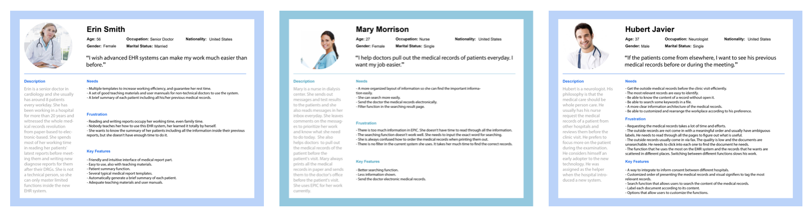
We also created an user journey, to document our team’s understanding how providers accessed patient data and the pain points they encounter doing so.
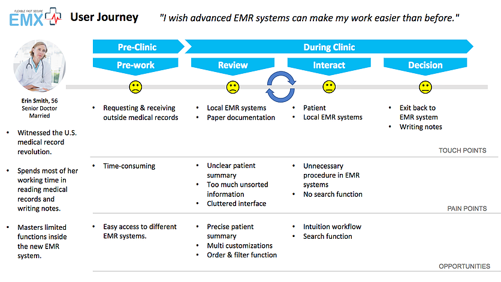
Ideation
Our team used a parallel design approach to coming up with design solutions. Each designer on our team created rough wireframes for multiple ideas and then pitched each idea to the team for feedback and critique. Afterwards, we reviewed all ideas that were pitched and created one collaborative wireframe using our individual ideas as references.

Design Solution
Design Features
Dashboard: A running timeline of the patient’s history
When providers meet patients, especially for the first time, they want to know the medical history of that patient. This will involve asking patients directly, but patients can miss details that are important to making a diagnosis. What can done so that providers check that they are getting the full picture of a patient’s history?
The dashboard is designed to allow healthcare providers to see a patient history at a glance. Information is organized as in a combined feed and seperated by record type.
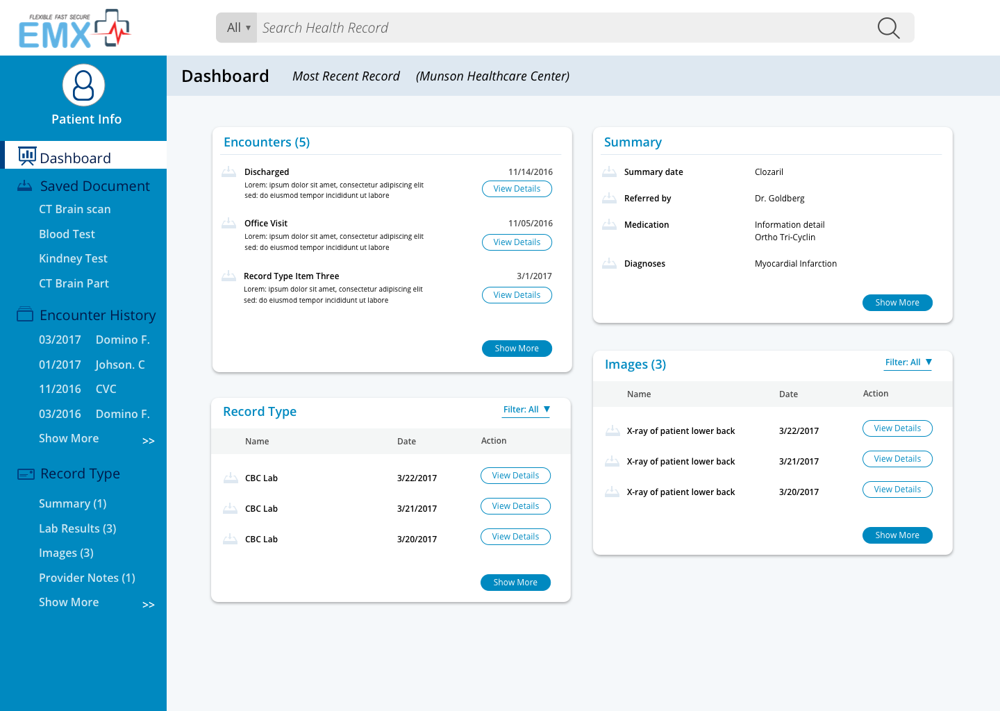
Design Rationale
Dashboard design allows providers to quickly find the latest records for the patient, which tend to more important for a patient’s current visit.
Splitting in the catagories allows different different providers to look for specific types of records first. This is important because different types of specialists want different information.
Combined encounter history on sidebar ensures that information patient forgets to share still gets noticed, even when is not part of the main dashboard area.
Dashboard Customization: Increase the level of personalization for each specific doctor’s practice
Different providers see different information as important. It would be futile for our team to attempt to select what type of records should appear on the dashboard since any decision we make would not acommedate many of our users. How might we accommodate different needs for different providers?
Dashboard customization gives EMX system the flexibility for users adjust the dashboard catagories to fit an individual provider’s workflow while still maintaining a clear information hierarchy that makes the page easy to skim.
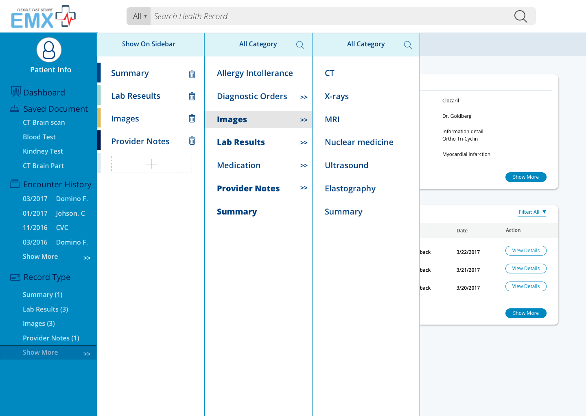
Design Rationale
Side out menu design hides some of the complexity from providers who are less tech savvy while providing does who are interested in customization a large degree of control.
Splitting types into hierarchial catagories enables users to follow the information scent to locate what they want.
Save for later: Keeping track of patient information
Providers typically look at multiple different types of documents making a diagnosis. In most EMR systems, this means multiple searches through the patient’s data to find all the documents they need. How might our system be designed so that providers can keep track of multiple documents at once?
Our save for later feature allows providers to mark documents they find important so that they can quickly refer back to several documents very quickly. This will save them the effort of having to repeat a search for a document simply to view it again.
Design Rationale
Save icon next to documents is simple and easily toggleable to make the process of saving as fast as possible while preserving the ability to undo mistakes easily.
Save for later button on bottom right corner allows providers to jump to their saved documents in one click.
Results filtering: more powerful searching for providers
We learned from interviews that providers will often use their EMR’s search feature to find documents that they dont immediately find. However, search can return too many results, which the provider when has to go through to find what they are looking for. How can we make searching faster for providers?
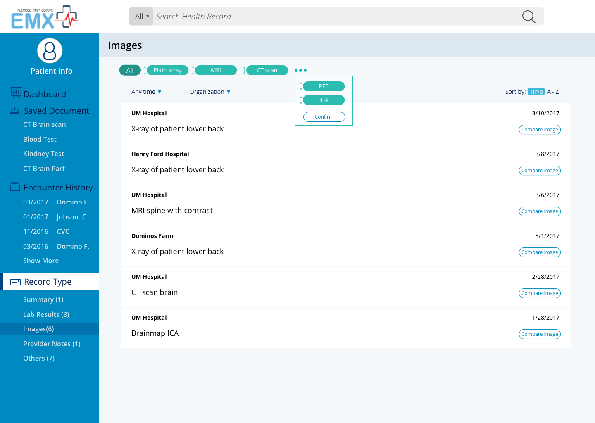
Design Rationale
Filtering empowers users to narrow down their results further.
Available options hint at if their search is on the right track.
Design Iteration
Our team completed four design cycles in which we built a prototype, got feedback from our users, and modified the prototype based on feedback. At each iteration, features were adjusted or changed based on what we learned from our users.
Refining the Dashboard Design
Through usability testing, we learned that doctors want to look multiple records of different types before making a diagnosis. Our dashboard design evolved so that providers can preview multiple types of records can be presented on EMX’s dashboard.
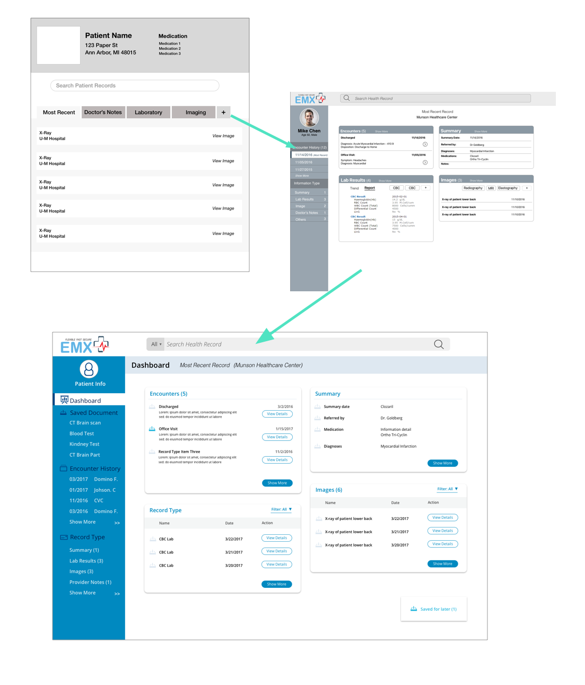
Language Differences
In our first prototypes, we used the word “history” to label the patient’s full visit history. During user testing, this term was confusing our users due to it having a different meaning in the context of healthcare. One user remarked, “When I see the word history, I think of the history of this patient’s [current] diagnosis.” We changed this labeling to stay “Encounter history” to clarify the confusion.

Adjusting for limitations
Viewing labs results is a common reason for a provider to access their EMR. For that reason, our initial designs displayed content from lab results records in the dashboard to save an extra click to view them. This was changed after learning that lab results can very long or scanned into a EMR as an image. In both cases, information would be difficult to pull, so our design was changed to reflect this technical limitation.

Deliverables
UI Pattern Library
We developed a color and typographic guide during our last iteration cycle to improve the consistency of our final mockup screens and to create unified visual system for EMX Systems. At the end of the project, the library was given to the client as deliverable to aid with development.


Interaction Map
A interaction map was also included with deliverables. We focused on making making the map as thorough as possible to document the user flow for EMX’s developers.
Click to here to view a hi-resolution version (PDF)
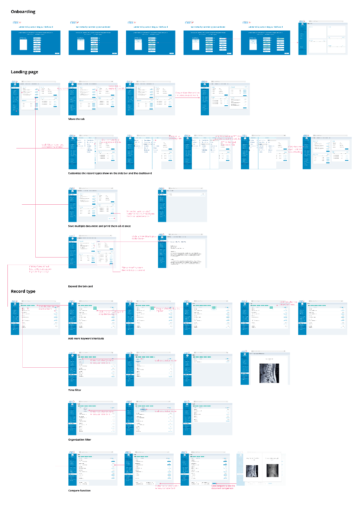
Interactive Prototype
The final version of our interactive prototype on InVision was included with our deliverables. A link to the prototype can be provided upon request.
Outcomes
We delivered a full InVision prototype of our project to our client, detailed UI specifications, and an interaction map documenting the information architecture. After some minor visual tweeks, our client was extremely satisfied with our work and plans to incorporate our design into the development of their product.
What our client had to say:
The result is an excellent implementation that we can build on the EMX service platform, well done. The specifications certainly help, making our bootstrap implementation quite natural. I’ll be building out a demo ready version of your design and hope to use to as an example of how providers and designers can come together to build great products that have a real-world impact. Your teams’ insight will certainly help us meet that goal.
Jason,
Lead Developer for EMX Systems